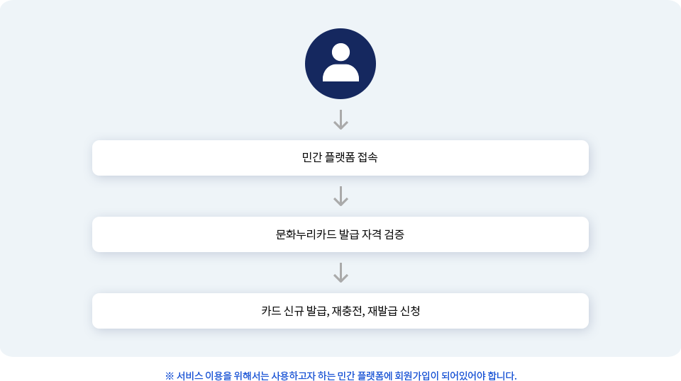
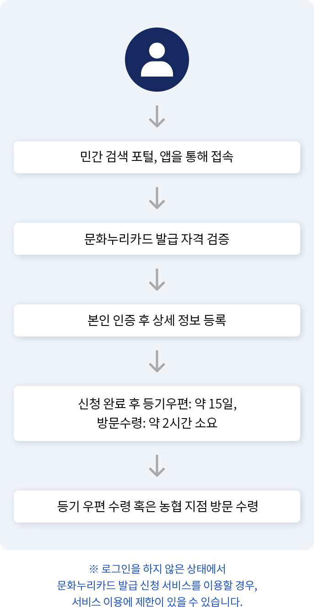

삶의 질 향상과 문화 격차 완화를 위해
다양한 문화활동을 지원합니다.
문화누리카드 발급신청
및 이용내역 조회
삶의 질 향상과 문화 격차 완화를 위해다양한 문화활동을 지원합니다.
문화누리카드는 삶의 질 향상과 문화격차 완화를 위해 기초생활 수급자, 차상위계층을 대상으로 문화예술, 국내여행, 체육활동을 지원하는 카드입니다. 문화누리카드는 기획재정부 복권위원회의 복권기금을 지원받아 추진하고 있는 공익 사업으로, 문화체육 관광부, 한국문화예술위원해, 전국 광역자치단체와 기초자치 단체 및 17개 시도지억 주관부터에서 추진하고 있으며, 문화, 관광, 체육분야의 서비스를 제공하는 영업장에서 사용할 수 있습니다.
문화누리카드로 찾아가는 문화서비스, 나눔티켓, 가맹점 확인 등을 통해 다양한 문화 나눔 서비스를 이용할 수 있습니다.
도서, 공연, 영화, 전시 관람을 비롯해 국내여행, 관광지, 항공기, 렌터카, 그리고 4대 프로 스포츠 관람, 체육시설 이용 등 문화 예술과 여행,체육의 다양한 분야에서 사용할 수 있습니다.

찾아가는 문화서비스, 나눔티켓, 가맹점 확인 등을 위해 다양한 문화 나눔 서비스를 이용할 수 있습니다.
-
문화누리카드 발급신청 및 이용내역 조회
민간 플랫폼을 통해 문화누리카드를
신규 발급·재발급·재충전·
수령 등록 등을 할 수 있습니다. -

잔액 확인 및 합산
간편하게 카드의 잔액을 확인할 수
있습니다. 또한 카드의 잔액을
합산할 수 있습니다. -
사용 내역 확인
개인 및 세대별 카드 사용 내역을
조회할 수 있습니다.
사용자 서비스 이용 프로세스
민간 채널을 통해 문화누리카드 발급신청 및 이용내역 조회 서비스를 이용하는 사용자들은 다음과 같은 과정을 거치게 됩니다. 서비스를 이용하기 위해 개별적인 앱/웹을 설치해야 했던 기존의 방법에서 벗어나, 평소 친숙하게 사용하던 민간 앱을 이용해 프로세스를 시작하고 마무리할 수 있습니다.
 